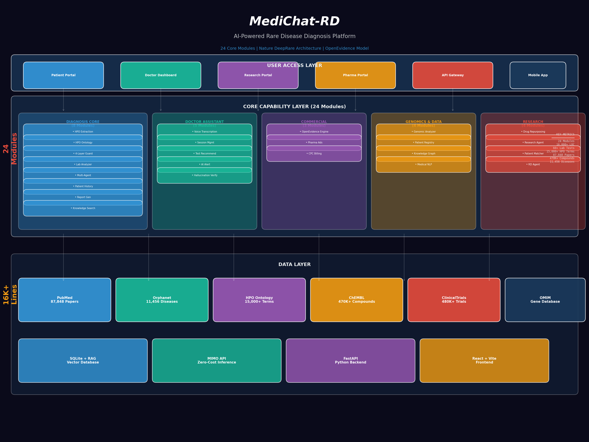

AI-Powered Rare Disease Diagnosis Platform · 24 Core Modules · Nature DeepRare Architecture

NLP-based extraction from clinical text to HPO codes. 40+ rare disease terms.
DeepRareComplete HPO with 15,000+ terms, synonym expansion, superclass navigation.
DiagnosisAssistantOrphanet validation → Symptom indexing → Literature support → Confidence penalty.
OrphaMind60+ lab tests with reference ranges, abnormal flags, critical value alerts.
OrphaMind6 sub-agents in serial workflow: symptoms → knowledge → literature → trials → specialists.
RarePath AISQLite persistence for diagnosis records, clinical notes, complete medical history.
OrphaMindDoctor-readable diagnosis reports with critical alerts, JSON export.
RarePath AIPubMed + Orphanet + OMIM multi-source search with RAG reasoning chains.
DeepRareReal-time doctor-patient dialogue recording with instant analysis.
JarvisMDConsultation lifecycle: start/pause/end with full history tracking.
JarvisMDAI suggests diagnostic tests based on symptoms and suspected diseases.
JarvisMDInstant differential diagnosis suggestions when patients describe symptoms.
JarvisMDEvery diagnosis validated through 4-layer protection before presentation.
OrphaMindFree AI diagnosis for doctors + Pharma paid recommendations at decision moments.
OpenEvidence8 ad slots for drugs/tests, disease-targeted, CPC billing model.
OpenEvidenceCost-per-click tracking, revenue analytics, impression/click counting.
OpenEvidenceHPO + genotype joint analysis (Exomiser model), 14 gene-disease associations.
ExomiserPatient registration, cohort management, GA4GH Phenopacket export.
PhenoTips31 nodes + 23 relations: diseases, genes, drugs, phenotypes.
CustomNamed entity recognition, relation extraction, clinical text summarization.
CustomChEMBL 470K compounds + OpenTargets network pharmacology analysis.
OpenTargetsAutomated rare disease research with multi-source data aggregation.
CustomHPO-based patient similarity matching for support groups.
PhenoTipsSpecialized AI agent for rare disease diagnosis workflow.
Custom| Disease | Patients | Diagnosis Delay | Data Completeness | Priority |
|---|---|---|---|---|
| Myasthenia Gravis (MG) | 200K+ | 2-5 years | ⭐⭐⭐⭐⭐ | 🥇 Primary |
| Spinal Muscular Atrophy (SMA) | 30K+ | 3-5 years | ⭐⭐⭐⭐⭐ | 🥈 Secondary |
| Gaucher Disease (GD) | 20K+ | 5-10 years | ⭐⭐⭐⭐ | 🥉 Tertiary |
| Duchenne Muscular Dystrophy | 50K+ | 2-4 years | ⭐⭐⭐⭐ | - |
| Fabry Disease | 10K+ | 5-10 years | ⭐⭐⭐⭐ | - |
AI diagnosis tools free for grassroots hospitals. Target: 30% of China's rare disease departments.
When doctors diagnose, recommend sponsored drugs/tests. CPC billing: ¥3-20 per click.
Y1: ¥100万 → Y2: ¥1,000万 → Y3: ¥4,000万